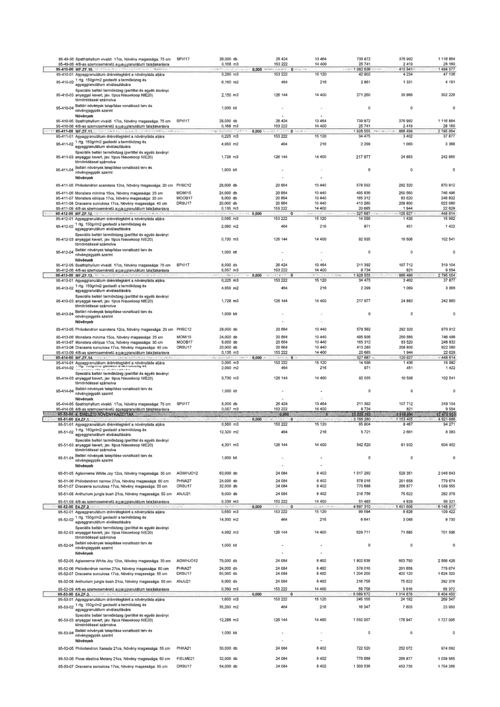

| Tétel | Menny. | Egys. | Anyag e.ár (net HUF) | Díj e.ár (net HUF) | Anyag összesen (net HUF) | Díj összesen (net HUF) | Anyag+Díj összesen (net HUF) |
|---|---|---|---|---|---|---|---|
| 95-49-05 Spathiphyllum vivaldi 17cs, Növény magassága: 75 cm | 28,000 | db | 26 424 | 13 464 | 739 872 | 376 992 | 1 116 864 |
| 95-49-06 4/8-as szemcseméretű agyaggranulátum talajtakarásra | 0,168 | m3 | 153 222 | 14 400 | 25 741 | 2 419 | 28 160 |
| 95-410-01 Agyaggranulátum drénrétegként a növényláda aljára | 0,280 | m3 | 153 222 | 15 120 | 42 902 | 4 234 | 47 136 |
| 95-410-02 1 rtg. 150g/m2 geotextil a termőközeg és agyaggranulátum elválasztására | 6,160 | m2 | 464 | 216 | 2 861 | 1 331 | 4 191 |
| 95-410-03 Speciális beltéri termőközeg (perlittel és egyéb ásványi anyaggal kevert, jav. típus Nieuwkoop NIE20) tömörödéssel számolva | 2,150 | m3 | 126 144 | 14 400 | 271 260 | 30 966 | 302 226 |
| 95-410-04 Beltéri növények telepítése vonatkozó terv és növényjegyzék szerint | 1,000 | klt | 0 | 0 | 0 | 0 | 0 |
| 95-410-05 Spathiphyllum vivaldi 17cs, Növény magassága: 75 cm | 28,000 | db | 26 424 | 13 464 | 739 872 | 376 992 | 1 116 864 |
| 95-410-06 4/8-as szemcseméretű agyaggranulátum talajtakarásra | 0,168 | m3 | 153 222 | 14 400 | 25 741 | 2 419 | 28 160 |
| 95-411-01 Agyaggranulátum drénrétegként a növényláda aljára | 0,225 | m3 | 153 222 | 15 120 | 34 475 | 3 402 | 37 877 |
| 95-411-02 1 rtg. 150g/m2 geotextil a termőközeg és agyaggranulátum elválasztására | 4,950 | m2 | 464 | 216 | 2 299 | 1 069 | 3 368 |
| 95-411-03 Speciális beltéri termőközeg (perlittel és egyéb ásványi anyaggal kevert, jav. típus Nieuwkoop NIE20) tömörödéssel számolva | 1,728 | m3 | 126 144 | 14 400 | 217 977 | 24 883 | 242 860 |
| 95-411-04 Beltéri növények telepítése vonatkozó terv és növényjegyzék szerint | 1,000 | klt | 0 | 0 | 0 | 0 | 0 |
| 95-411-05 Philodendron scandens 12cs, Növény magassága: 20 cm | 28,000 | db | 20 664 | 10 440 | 578 592 | 292 320 | 870 912 |
| 95-411-06 Monstera minima 15cs, Növény magassága: 25 cm | 24,000 | db | 20 664 | 10 440 | 495 936 | 250 560 | 746 496 |
| 95-411-07 Monstera obliqua 17cs, Növény magassága: 30 cm | 8,000 | db | 20 664 | 10 440 | 165 312 | 83 520 | 248 832 |
| 95-411-08 Dracaena surculosa 17cs, Növény magassága: 40 cm | 20,000 | db | 20 664 | 10 440 | 413 280 | 208 800 | 622 080 |
| 95-411-09 4/8-as szemcseméretű agyaggranulátum talajtakarásra | 0,135 | m3 | 153 222 | 14 400 | 20 685 | 1 944 | 22 629 |
| 95-412-01 Agyaggranulátum drénrétegként a növényláda aljára | 0,095 | m3 | 153 222 | 15 120 | 14 556 | 1 436 | 15 992 |
| 95-412-02 1 rtg. 150g/m2 geotextil a termőközeg és agyaggranulátum elválasztására | 2,090 | m2 | 464 | 216 | 971 | 451 | 1 422 |
| 95-412-03 Speciális beltéri termőközeg (perlittel és egyéb ásványi anyaggal kevert, jav. típus Nieuwkoop NIE20) tömörödéssel számolva | 0,730 | m3 | 126 144 | 14 400 | 92 035 | 10 506 | 102 541 |
| 95-412-04 Beltéri növények telepítése vonatkozó terv és növényjegyzék szerint | 1,000 | klt | 0 | 0 | 0 | 0 | 0 |
| 95-412-05 Spathiphyllum vivaldi 17cs, Növény magassága: 75 cm | 8,000 | db | 26 424 | 13 464 | 211 392 | 107 712 | 319 104 |
| 95-412-06 4/8-as szemcseméretű agyaggranulátum talajtakarásra | 0,057 | m3 | 153 222 | 14 400 | 8 734 | 821 | 9 554 |
| 95-413-01 Agyaggranulátum drénrétegként a növényláda aljára | 0,225 | m3 | 153 222 | 15 120 | 34 475 | 3 402 | 37 877 |
| 95-413-02 1 rtg. 150g/m2 geotextil a termőközeg és agyaggranulátum elválasztására | 4,950 | m2 | 464 | 216 | 2 299 | 1 069 | 3 368 |
| 95-413-03 Speciális beltéri termőközeg (perlittel és egyéb ásványi anyaggal kevert, jav. típus Nieuwkoop NIE20) tömörödéssel számolva | 1,728 | m3 | 126 144 | 14 400 | 217 977 | 24 883 | 242 860 |
| 95-413-04 Beltéri növények telepítése vonatkozó terv és növényjegyzék szerint | 1,000 | klt | 0 | 0 | 0 | 0 | 0 |
| 95-413-05 Philodendron scandens 12cs, Növény magassága: 20 cm | 28,000 | db | 20 664 | 10 440 | 578 592 | 292 320 | 870 912 |
| 95-413-06 Monstera minima 15cs, Növény magassága: 25 cm | 24,000 | db | 20 664 | 10 440 | 495 936 | 250 560 | 746 496 |
| 95-413-07 Monstera obliqua 17cs, Növény magassága: 30 cm | 8,000 | db | 20 664 | 10 440 | 165 312 | 83 520 | 248 832 |
| 95-413-08 Dracaena surculosa 17cs, Növény magassága: 40 cm | 20,000 | db | 20 664 | 10 440 | 413 280 | 208 800 | 622 080 |
| 95-413-09 4/8-as szemcseméretű agyaggranulátum talajtakarásra | 0,135 | m3 | 153 222 | 14 400 | 20 685 | 1 944 | 22 629 |
| 95-414-01 Agyaggranulátum drénrétegként a növényláda aljára | 0,095 | m3 | 153 222 | 15 120 | 14 556 | 1 436 | 15 992 |
| 95-414-02 1 rtg. 150g/m2 geotextil a termőközeg és agyaggranulátum elválasztására | 2,090 | m2 | 464 | 216 | 971 | 451 | 1 422 |
| 95-414-03 Speciális beltéri termőközeg (perlittel és egyéb ásványi anyaggal kevert, jav. típus Nieuwkoop NIE20) tömörödéssel számolva | 0,730 | m3 | 126 144 | 14 400 | 92 035 | 10 506 | 102 541 |
| 95-414-04 Beltéri növények telepítése vonatkozó terv és növényjegyzék szerint | 1,000 | klt | 0 | 0 | 0 | 0 | 0 |
| 95-414-05 Spathiphyllum vivaldi 17cs, Növény magassága: 75 cm | 8,000 | db | 26 424 | 13 464 | 211 392 | 107 712 | 319 104 |
| 95-414-06 4/8-as szemcseméretű agyaggranulátum talajtakarásra | 0,057 | m3 | 153 222 | 14 400 | 8 734 | 821 | 9 554 |
| 95-51-01 Agyaggranulátum drénrétegként a növényláda aljára | 0,560 | m3 | 153 222 | 15 120 | 85 804 | 8 467 | 94 271 |
| 95-51-02 1 rtg. 150g/m2 geotextil a termőközeg és agyaggranulátum elválasztására | 12,320 | m2 | 464 | 216 | 5 721 | 2 661 | 8 383 |
| 95-51-03 Speciális beltéri termőközeg (perlittel és egyéb ásványi anyaggal kevert, jav. típus Nieuwkoop NIE20) tömörödéssel számolva | 4,301 | m3 | 126 144 | 14 400 | 542 520 | 61 932 | 604 452 |
| 95-51-04 Beltéri növények telepítése vonatkozó terv és növényjegyzék szerint | 1,000 | klt | 0 | 0 | 0 | 0 | 0 |
| 95-51-05 Aglaonema White Joy 12cs, Növény magassága: 30 cm | 63,000 | db | 24 084 | 8 402 | 1 517 292 | 529 351 | 2 046 643 |
| 95-51-06 Philodendron narrow 27cs, Növény magassága: 60 cm | 24,000 | db | 24 084 | 8 402 | 578 016 | 201 658 | 779 674 |
| 95-51-07 Dracaena surculosa 17cs, Növény magassága: 55 cm | 32,000 | db | 24 084 | 8 402 | 770 688 | 268 877 | 1 039 565 |
| 95-51-08 Anthurium jungle bush 21cs, Növény magassága: 50 cm | 9,000 | db | 24 084 | 8 402 | 216 756 | 75 622 | 292 378 |
| 95-51-09 4/8-as szemcseméretű agyaggranulátum talajtakarásra | 0,336 | m3 | 153 222 | 14 400 | 51 483 | 4 838 | 56 321 |
| 95-52-01 Agyaggranulátum drénrétegként a növényláda aljára | 0,650 | m3 | 153 222 | 15 120 | 99 594 | 9 828 | 109 422 |
| 95-52-02 1 rtg. 150g/m2 geotextil a termőközeg és agyaggranulátum elválasztására | 14,300 | m2 | 464 | 216 | 6 641 | 3 089 | 9 730 |
| 95-52-03 Speciális beltéri termőközeg (perlittel és egyéb ásványi anyaggal kevert, jav. típus Nieuwkoop NIE20) tömörödéssel számolva | 4,992 | m3 | 126 144 | 14 400 | 629 711 | 71 885 | 701 596 |
| 95-52-04 Beltéri növények telepítése vonatkozó terv és növényjegyzék szerint | 1,000 | klt | 0 | 0 | 0 | 0 | 0 |
| 95-52-05 Aglaonema White Joy 12cs, Növény magassága: 30 cm | 79,000 | db | 24 084 | 8 402 | 1 902 636 | 663 790 | 2 566 426 |
| 95-52-06 Philodendron narrow 27cs, Növény magassága: 60 cm | 24,000 | db | 24 084 | 8 402 | 578 016 | 201 658 | 779 674 |
| 95-52-07 Dracaena surculosa 17cs, Növény magassága: 55 cm | 50,000 | db | 24 084 | 8 402 | 1 204 200 | 420 120 | 1 624 320 |
| 95-52-08 Anthurium jungle bush 21cs, Növény magassága: 50 cm | 9,000 | db | 24 084 | 8 402 | 216 756 | 75 622 | 292 378 |
| 95-52-09 4/8-as szemcseméretű agyaggranulátum talajtakarásra | 0,390 | m3 | 153 222 | 14 400 | 59 756 | 5 616 | 65 372 |
| 95-53-01 Agyaggranulátum drénrétegként a növényláda aljára | 1,600 | m3 | 153 222 | 15 120 | 245 155 | 24 192 | 269 347 |
| 95-53-02 1 rtg. 150g/m2 geotextil a termőközeg és agyaggranulátum elválasztására | 35,200 | m2 | 464 | 216 | 16 347 | 7 603 | 23 950 |
| 95-53-03 Speciális beltéri termőközeg (perlittel és egyéb ásványi anyaggal kevert, jav. típus Nieuwkoop NIE20) tömörödéssel számolva | 12,288 | m3 | 126 144 | 14 400 | 1 550 057 | 176 947 | 1 727 005 |
| 95-53-04 Beltéri növények telepítése vonatkozó terv és növényjegyzék szerint | 1,000 | klt | 0 | 0 | 0 | 0 | 0 |
| 95-53-05 Philodendron Xanadu 21cs, Növény magassága: 55 cm | 30,000 | db | 24 084 | 8 402 | 722 520 | 252 072 | 974 592 |
| 95-53-06 Ficus elastica Melany 21cs, Növény magassága: 60 cm | 32,000 | db | 24 084 | 8 402 | 770 688 | 268 877 | 1 039 565 |
| 95-53-07 Dracaena surculosa 17cs, Növény magassága: 55 cm | 54,000 | db | 24 084 | 8 402 | 1 300 536 | 453 730 | 1 754 266 |
